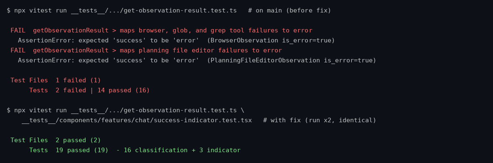

Terminal runs of __tests__/components/conversation-events/chat/event-content-helpers/get-observation-result.test.ts: failing on main (BrowserObservation/GlobObservation/GrepObservation/PlanningFileEditorObservation with is_error=true map to "success"), passing with the fix together with the new success-indicator.test.tsx (the fix also renders a red x-circle for error results; none was shown before).
